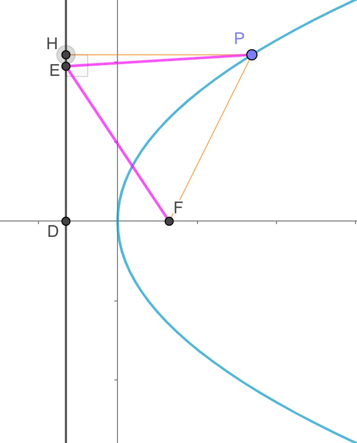

【解析几何大题】例题0328A
已知抛物线C:y2=2px(p>0)的焦点为F,准线为l,若点P在C上,点E在l上,
且ΔPEF是变长为8的正三角形
(I)求C的方程
(II)过点(1,0)的直线n与C相较于A,B两点,若FA−→−⋅FB−→−=−23,求ΔFAB的面积
小蒋的解答(2019-03-28):
(I)
 
知识点1:抛物线定义....................
过P点做准线的垂线,交于点H,根据抛物线定义,PH=PF
题意可知PE=PF,∴PE=PH,也就是E,H重合
知识点2:(初中)特殊三角形....................
易得ΔDEF为直角三角形,且∠FED=30o
∴DF=12EF=4
知识点3:抛物线方程....................
焦点到准线的距离为|p|,|p|=DF=4
题意p>0,∴p=4
∴抛物线方程为y2=8x
(II)

步骤1:设点线,明确目标,分析联动关系....................
(★)设点A(x1,y1),B(x2,y2),
(★)∵直线lAB过点(1,0)∴可设直线lAB为:x=my+1,一般式为x−my−1=0
注意:抛物线开口是左右时,最好把直线设成形如x=my+1,而非y=k(x−1)
(★)目标:求三角形面积,也就求出直线的方程,也就是求出m
(★)联动关系:
| 几何(思考) |
|
代数(代入化简) |
| 当直线l移动(m) |
|
(m)满足一个关系式
(也就求得了m的范围或值) |
| ⇓ |
|
⇑ 所有的(y1,y2)通过韦达定理换成(m) |
AB两点移动(y1,y2)
满足:FA−→−⋅FB−→−=−23 |
⇒ |
(y1,y2)满足一个关系式 |
步骤2:几何转代数....................
(★)几何:A,B两点→代数:需要联立方程,消元,韦达,Δ
联立:{x=my+1y2=8x
消元化简:y2−8my−8=0
y1+y2=8m
y1⋅y2=−8
此处直线必定与抛物线有两交点,不需要考虑Δ
(★)几何:三角形面积→代数:点线距离公式,两点距离公式
|AB|=(x1−x2)2+(y1−y2)2‾‾‾‾‾‾‾‾‾‾‾‾‾‾‾‾‾‾‾‾‾‾√
点F到直线AB的距离为:|2−m×0−1|12+(−m)2√,化简得距离为:112+m2√
三角形面积S=12(x1−x2)2+(y1−y2)2‾‾‾‾‾‾‾‾‾‾‾‾‾‾‾‾‾‾‾‾‾‾√112+m2√
(★)几何:向量→代数:向量坐标
F坐标为(2,0)
FA−→−=(x1−2,y1−0)=(x1−2,y1)
FB−→−=(x2−2,y2−0)=(x2−2,y2)
FA−→−⋅FB−→−=(x1−2)(x2−2)+y1⋅y2
步骤3:代入化简....................
FA−→−⋅FB−→−=−23
(x1−2)(x2−2)+y1⋅y2=−23
(★)代入直线,把所有的x1,x2换成y1,y2,你也可以代入抛物线来做
(my1+1−2)(my2+1−2)+y1⋅y2=−23
整理得:m2y1y2−m(y1+y2)+1+y1⋅y2=−23
(★)代入韦达定理,把所有的y1,y2换成m
m2⋅(−8)−m⋅(8m)+1+(−8)=−23
整理得:m2=1
.
S=12(x1−x2)2+(y1−y2)2‾‾‾‾‾‾‾‾‾‾‾‾‾‾‾‾‾‾‾‾‾‾√112+m2√
代入m:S=122√(x1−x2)2+(y1−y2)2‾‾‾‾‾‾‾‾‾‾‾‾‾‾‾‾‾‾‾‾‾‾√
(★)代入直线,把所有的x1,x2换成y1,y2,
S=122√(my1+1−(my2+1))2+(y1−y2)2‾‾‾‾‾‾‾‾‾‾‾‾‾‾‾‾‾‾‾‾‾‾‾‾‾‾‾‾‾‾‾‾‾‾√
整理得:S=122√m2(y1−y2)2+(y1−y2)2‾‾‾‾‾‾‾‾‾‾‾‾‾‾‾‾‾‾‾‾‾‾‾‾√
代入m:S=12(y1−y2)2‾‾‾‾‾‾‾‾‾‾√=12(y1+y2)2−4y1y2‾‾‾‾‾‾‾‾‾‾‾‾‾‾‾‾‾‾√
(★)代入韦达定理,把所有的y1,y2换成m
S=12(8m)2−4×(−8)‾‾‾‾‾‾‾‾‾‾‾‾‾‾‾‾√=16m2+8‾‾‾‾‾‾‾‾‾√
代入m:S=26‾√
步骤4:结论....................
三角形面积为26‾√